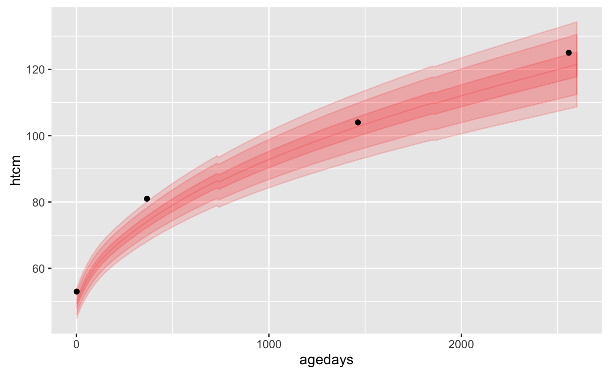

Intro
The “hbgd” R package is a collection of visual and analytic methods for the study of healthy birth, growth, and development in children.
This document provides a walk through of much of the package’s functionality, provided through examples and discussion. The package reference page has an exhaustive listing of all of the exported functions in the package along with detailed documentation about their parameters and usage.
Installation
The hbgd package is not yet on CRAN but can be installed from a CRAN-like repository with the following:
options(repos = c(tessera = "http://packages.tessera.io", getOption("repos")))
install.packages("hbgd")Once the package is is installed, you simply need to load it:
library(hbgd)Working With Data
The primary type of data this package is meant to deal with is longitudinal anthropometric growth measurements with associated variables having to do with health/interventions/insults, along with per-subject meta data.
CPP sample data
A subset of growth data from the collaborative perinatal project (CPP) is shipped with this package to serve as an example for the various methods available in the package.
The data set looks like this:
head(cpp) subjid agedays wtkg htcm lencm bmi waz haz whz baz siteid
1 1 1 4.621 55 55 15.27603 2.38 2.61 0.19 1.35 5
2 1 123 8.760 NA NA NA 1.99 NA NA NA 5
3 1 366 14.500 79 79 23.23346 3.84 1.35 4.02 3.89 5
4 2 1 3.345 51 51 12.86044 0.06 0.50 -0.64 -0.43 5
5 2 123 4.340 NA NA NA -3.99 NA NA NA 5
6 2 366 8.400 73 73 15.76281 -1.27 -1.17 -0.96 -0.80 5
sexn sex feedingn feeding gagebrth birthwt birthlen apgar1 apgar5 mage
1 1 Male 90 Unknown 287 4621 55 8 9 21
2 1 Male 90 Unknown 287 4621 55 8 9 21
3 1 Male 90 Unknown 287 4621 55 8 9 21
4 1 Male 90 Unknown 280 3345 51 8 9 15
5 1 Male 90 Unknown 280 3345 51 8 9 15
6 1 Male 90 Unknown 280 3345 51 8 9 15
mracen mrace mmaritn mmarit meducyrs sesn ses parity gravida
1 5 White 1 Married 12 50 Middle 1 1
2 5 White 1 Married 12 50 Middle 1 1
3 5 White 1 Married 12 50 Middle 1 1
4 5 White 1 Married NA NA . 0 0
5 5 White 1 Married NA NA . 0 0
6 5 White 1 Married NA NA . 0 0
smoked mcignum preeclmp comprisk geniq sysbp diabp
1 0 0 0 none NA NA NA
2 0 0 0 none NA NA NA
3 0 0 0 none NA NA NA
4 1 35 0 none NA NA NA
5 1 35 0 none NA NA NA
6 1 35 0 none NA NA NAThe column names are illustrative of “standards” that the package is designed to deal with, for example subjid for the subject ID, wtkg for weight in kilograms, htcm for height in centimeters, etc.
While it is not required for data sets to have these variable names, it is easiest to deal with the data when it is in this format, as these names are used to get data from the WHO growth standards, associate with variable labels / descriptions, etc.
Variable labels
A full list of recognized variable names and associated labels is available in a named list that comes with the package, hbgd_labels, also available as a data frame, hbgd_labels_df:
DT::datatable(hbgd_labels_df, rownames = FALSE)While you can use most of the functionality of this package with data in your own format, it will be most convenient to transform your variable names to match those found hbgd_labels.
Dealing with longitudinal data
Longitudinal data by definition provides repeated measurements of one or more variables over time for the same subject. However, it often additionally provides a set of subject-level variables - variables that do not change over time for each subject but provide additional demographic or other information about each subject.
For example, let’s look at a few rows and columns of the cpp data:
cpp[1:5, c(1, 5:13)] subjid lencm bmi waz haz whz baz siteid sexn sex
1 1 55 15.27603 2.38 2.61 0.19 1.35 5 1 Male
2 1 NA NA 1.99 NA NA NA 5 1 Male
3 1 79 23.23346 3.84 1.35 4.02 3.89 5 1 Male
4 2 51 12.86044 0.06 0.50 -0.64 -0.43 5 1 Male
5 2 NA NA -3.99 NA NA NA 5 1 MaleVariables like lencm and bmi are time-varying variables, but variables like siteid and sex are subject-level - they don’t change within each subject.
When dealing with longitudinal data, sometimes we want to look at just subject-level variables. In doing so, we want to transform the data so there is only one record per subject. There is a utility function for this, get_subject_data() that returns only subject-level columns of the data, with one record per subject.
head(get_subject_data(cpp)) subjid siteid sexn sex feedingn feeding gagebrth
1 1 5 1 Male 90 Unknown 287
2 2 5 1 Male 90 Unknown 280
3 3 5 1 Male 90 Unknown 266
4 4 5 2 Female 3 Mixture breast/formula fed 266
5 5 5 2 Female 1 Exclusively breast fed 259
6 6 5 1 Male 3 Mixture breast/formula fed 273
birthwt birthlen apgar1 apgar5 mage mracen mrace mmaritn mmarit
1 4621 55 8 9 21 5 White 1 Married
2 3345 51 8 9 15 5 White 1 Married
3 3827 54 9 9 23 5 White 1 Married
4 3147 49 8 9 26 5 White 1 Married
5 3033 50 8 8 28 5 White 1 Married
6 3770 50 2 8 29 5 White 1 Married
meducyrs sesn ses parity gravida smoked mcignum preeclmp
1 12 50 Middle 1 1 0 0 0
2 NA NA . 0 0 1 35 0
3 NA NA . 1 1 1 20 0
4 12 50 Middle 3 3 1 15 0
5 7 50 Middle 4 4 1 10 0
6 12 63 Upper-middle 5 5 1 4 0
comprisk
1 none
2 none
3 none
4 none
5 none
6 noneLikewise, if you only want to look at the time-varying variables in the data, you can use get_time_data().
head(get_time_data(cpp)) agedays wtkg htcm lencm bmi waz haz whz baz geniq sysbp
1 1 4.621 55 55 15.27603 2.38 2.61 0.19 1.35 NA NA
2 123 8.760 NA NA NA 1.99 NA NA NA NA NA
3 366 14.500 79 79 23.23346 3.84 1.35 4.02 3.89 NA NA
4 1 3.345 51 51 12.86044 0.06 0.50 -0.64 -0.43 NA NA
5 123 4.340 NA NA NA -3.99 NA NA NA NA NA
6 366 8.400 73 73 15.76281 -1.27 -1.17 -0.96 -0.80 NA NA
diabp
1 NA
2 NA
3 NA
4 NA
5 NA
6 NAMeta data
This package has a utility function, get_data_attributes(), that is used behind the scenes to compute meta data about longitudinal data sets. This function does things like infers whether a variable is subject-level or time-varying, and computes some summary statistics that are useful to have on hand like the number of subjects, etc. This function will attach the meta data to the data set’s attributes. We mention it here because it may be useful to know that this meta data exists.
For example:
cpp <- get_data_attributes(cpp)This adds an attribute list called “hbgd” to the the data, which includes a summary about the data:
str(attr(cpp, "hbgd")$var_summ)Classes 'var_summ' and 'data.frame': 37 obs. of 5 variables:
$ variable: chr "subjid" "agedays" "wtkg" "htcm" ...
$ label : chr "Subject ID" "Age since birth at examination (days)" "Weight (kg)" "Standing height (cm)" ...
$ type : chr "subject id" "time indicator" "time-varying" "time-varying" ...
$ vtype : chr "num" "cat" "num" "num" ...
$ n_unique: int 500 5 417 81 42 956 527 137 413 392 ...This tells us which variables are subject-level and time-varying variables, and which are categorical vs. numeric. It also adds labels and computes some summary statistics. This information is useful for some of the summary plots that we will be making.
Dealing with length/height
Most data sets have a variable for recumbent length measurements, lencm, indicating the measured length of the child up to 2 years, after which a new variable for standing height, htcm, becomes available. For plotting and modeling purposes, it is most often useful to deal with both measurements in the same variable.
There is a utility function, fix_height(), that will take the data and return a modified data set where by default the htcm variable will become the combination of both lencm and htcm. This makes the data compatible with WHO growth standard lookups since the WHO lookups in this package reference htcm for both length and height.
cpp <- fix_height(cpp)Growth Standards
A major feature of this package is a collection of utility functions for conveniently converting anthropometric measurements to z-scores or centiles (and converting z-scores / centiles to measurements) for three major growth standards:
- WHO growth standard (functions prefixed with
who_) - INTERGROWTH newborn size standard (functions prefixed with
igb_) - INTERGROWTH fetal growth standard (functions prefixed with
igpre_)
These growth standards have previously not necessarily been easy to access inside an R analysis. In some cases R code has been provided for making conversions with the growth standard but in a form that is difficult to embed and generalize (copying and pasting code that will be frequently used is messy will almost surely lead to errors). Some standards are provided only through published coefficients. The goal here is to put all the standards into a single package with a unified interface, while providing additional functionality like interpolation for regions where a standard’s provided tables are sparse.
The growth standard conversion methods have been painstakingly checked for accuracy through comparisons with the standards provided by the original sources. However, we advise caution and double checking against the original sources when results will impact decisions. Links to the original sources can be found in the sections for each standard below.
WHO growth standard
The WHO growth standard provides international standard distributions for several anthropometric measurements.
The data / methodology for the WHO growth standard functions in this package come from the WHO child growth standard and the 5-19 years growth reference.
WHO growth standard conversions are available for the following pairings of variables:
| x_var | y_var | span of x_var |
|---|---|---|
| agedays | wtkg (weight kg) | ~10 years (0 - 3682 days) |
| agedays | htcm (height cm) | ~19 years (0 - 6970 days) |
| agedays | bmi (BMI kg/m2) | ~19 years (0 - 6970 days) |
| agedays | hcircm (head circumference cm) | ~ 5 years (0 - 1856 days) |
| agedays | muaccm (mid upper-arm circumference cm) | ~ 5 years (0 - 1856 days) |
| agedays | ss (subscalpular skinfold) | ~ 5 years (0 - 1856 days) |
| agedays | tsftmm (triceps skinfold thickness mm) | ~ 5 years (0 - 1856 days) |
| htcm | wtkg | 120 cm |
Note that the WHO provides recumbent length for 0-2 years of age, after which the standing height is provided. Here we have merged the two into a single variable, htcm.
Also note that in almost every case the x variable is agedays - the age since birth in days. When the desired x variable is agedays, a simplified set of functions has been created to convert between z-scores or centiles with the following naming convention, for example, when working with wtkg:
who_wtkg2zscore(agedays, wtkg, sex = “Female”): for specifiedwtkgvalues at agesagedays, get the corresponding Female z-scoreswho_wtkg2centile(agedays, wtkg, sex = “Female”): for specifiedwtkgvalues at agesagedays, get the corresponding Female centileswho_centile2wtkg(agedays, p = 50, sex = “Female”): for given centiles (p=50, or median, as default) at agesagedays, get the correspondingwtkgvalueswho_zscore2wtkg(agedays, z = 0, sex = “Female”): for given z-scores (z=0as default) at agesagedays, get the correspondingwtkgvalues
If you are working with htcm you can swap wtkg for htcm, etc.
As z-scores are related to centiles through a simple conversion, there is a bit of redundancy in having functions for both, but both are provided for convenience.
Examples
Here are some examples:
Get WHO median height vs. age for first-year females
Here we get the WHO median height vs. age for females weekly for the first year:
x <- seq(0, 365, by = 7)
med <- who_centile2htcm(x)
plot(x, med, xlab = "age in days", ylab = "median female height (cm)")
Here the defaults of sex="Female" and p=50 were used, giving us the median height for females at the specified ages.
Get WHO 75th centile height vs. age for first-year males
To get the WHO 75th centile weight value for age of males at these same time points, we can do the following:
q75 <- who_centile2htcm(x, p = 75, sex = "Male")Get the WHO centile for specific age and height
Suppose we want to know the WHO centile of a female child at 2 years of age (730.5 days) who is 90 cm tall:
who_htcm2centile(agedays = 730.5, htcm = 90)[1] 88.86932This girl’s height is at the 89th centile.
Getting values for combinations of parameters
We can send vectors of values into any of the functions and lookups in the appropriate tables will be made for each distinct case.
For example, suppose we want to plot the WHO 99th centile of weight for age of boys and girls for the first 4 years of life:
dat <- data.frame(
x = rep(seq(0, 1461, length = 100), 2),
sex = rep(c("Male", "Female"), each = 100))
dat$p99 <- who_centile2wtkg(dat$x, p = 99, sex = dat$sex)
xyplot(kg2lb(p99) ~ days2years(x), groups = sex, data = dat,
ylab = "99th percentile weight (pounds) for males",
xlab = "age (years)", auto.key = TRUE)Here we are using a convenience function, kg2lb(), provided with the package to plot the weights in pounds.
Getting z-scores for combinations of parameters
Suppose we want to compute the height and weight-for-age z-scores (HAZ and WAZ) for each subject in the cpp data:
haz <- who_htcm2zscore(cpp$agedays, cpp$htcm, sex = cpp$sex)
waz <- who_wtkg2zscore(cpp$agedays, cpp$wtkg, sex = cpp$sex)Since haz and waz have already provided with the data, we can check that our result from the WHO standard matches that of the provided data:
comp = make.groups(
haz = data.frame(data = cpp$haz, computed = haz),
waz = data.frame(data = cpp$waz, computed = waz)
)
xyplot(computed ~ data | which, data = comp)Generic WHO functions
To utility functions described so far all for measurements against age. To deal with the case of height-for-weight WHO calculations, and also to provide a more generic interface to accessing the WHO growth standards, the following functions are also provided:
who_value2zscore(x, y, x_var = “agedays”, y_var = “htcm”, sex = “Female”)who_value2centile(x, y, x_var = “agedays”, y_var = “htcm”, sex = “Female”)who_centile2value(x, p = 50, x_var = “agedays”, y_var = “htcm”,,sex = “Female”)who_zscore2value(x, z = 0, y_var = “htcm”, x_var = “agedays”,,sex = “Female”)
Here both the x variable and y variable can be specified. For example, the following are equivalent:
who_htcm2centile(agedays = 730.5, htcm = 90)[1] 88.86932who_value2centile(x = 730.5, y = 90, x_var = "agedays", y_var = "htcm")[1] 88.86932But now we can do things like computing height-for-weight centiles:
who_value2centile(x = 90, y = 12, x_var = "htcm", y_var = "wtkg")[1] 27.61003INTERGROWTH newborn standard
The INTERGROWTH newborn standard provides standards for newborn weight, length, and head circumference by gestational age and sex from gestational age of 232 days to 300 days.
Functions for this standard have a similar naming structure as we saw for the WHO standards:
igb_lencm2zscore(gagebrth, lencm, sex = “Female”): for specifiedlencmvalues at gestational ages at birthgagebrth, get the corresponding Female z-scoresigb_lencm2centile(gagebrth, lencm, sex = “Female”): for specifiedlencmvalues at gestational ages at birthgagebrth, get the corresponding Female centilesigb_centile2lencm(gagebrth, p = 50, sex = “Female”): for given centiles (p=50, or median, as default) at gestational ages at birthgagebrth, get the correspondinglencmvaluesigb_zscore2lencm(gagebrth, z = 0, sex = “Female”): for given z-scores (z=0as default) at gestational ages at birthgagebrth, get the correspondinglencmvalues
The same functions are available for weight wtkg and head circumference hcircm.
Usage is also the same as in WHO.
Examples
Suppose we want to get the birth length z-scores for all subjects in our cpp data set:
hbaz <- igb_lencm2zscore(cpp$gagebrth, cpp$birthlen, sex = cpp$sex)Also, we can make a quick and crude recreation of the boys charts seen here with this:
chartdat <- do.call(rbind, lapply(c(3, 10, 50, 90, 97), function(p) {
data.frame(p = p, gagebrth = 232:300,
make.groups(
wtkg = igb_centile2wtkg(232:300, p, sex = "Male"),
lencm = igb_centile2lencm(232:300, p, sex = "Male"),
hcircm = igb_centile2hcircm(232:300, p, sex = "Male")
))
}))
xyplot(data ~ gagebrth / 7 | which, groups = p, data = chartdat,
type = c("l", "g"),
strip = FALSE, strip.left = TRUE,
scales = list(y = list(relation = "free")),
layout = c(1, 3), as.table = TRUE,
xlab = "Gestational Age at Birth (weeks)", ylab = ""
)
INTERGROWTH prenatal standard
This package also has functions for dealing with the INTERGROWTH international standards for fetal growth based on serial ultrasound measurements. This data covers gestational ages from 7 to 40 weeks (98 to 280 days), for the following variables:
| variable | description |
|---|---|
| hccm | head circumference (cm) |
| bpdcm | biparietel diameter (cm) |
| ofdcm | occipito-frontal diameter (cm) |
| accm | abdominal circumference (cm) |
| flcm | femur length (cm) |
As with previous growth standard methods, a similar interface to this growth standard is provided with the following conventions for, for example, hccm:
igpre_flcm2zscore(gagedays, flcm, sex = “Female”): for specifiedflcmvalues at gestational agesgagedays, get the corresponding Female z-scoresigpre_flcm2centile(gagedays, flcm, sex = “Female”): for specifiedflcmvalues at gestational agesgagedays, get the corresponding Female centilesigpre_centile2flcm(gagedays, p = 50, sex = “Female”): for given centiles (p=50, or median, as default) at gestational agesgagedays, get the correspondingflcmvaluesigpre_zscore2flcm(gagedays, z = 0, sex = “Female”): for given z-scores (z=0as default) at gestational agesgagedays, get the correspondingflcmvalues
Usage is similar as the other growth standards. For example, to get the centile for child at 100 gestational days with an ultrasound head circumference measurement of 11cm:
igpre_hccm2centile(100, 11)[1] 93.39812Plot utilities
This package provides a few utility functions for making it easy to add any of the growth standards as an overlay on a plot. Methods are available for ggplot, lattice, and rbokeh. These functions have similar parameters to the growth standard lookup functions described above. The methods available are:
- ggplot2
geom_who()geom_igb()geom_igpre()- lattice
panel.who()panel.igb()panel.igpre()- rbokeh
ly_who()ly_igb()ly_igpre()
Some examples are below.
ggplot
Here is an example of using the utility function, geom_who(), with a plot of a CPP subject’s height vs. age, plotting the default of WHO bands at centiles 1, 5, 25, 50, 75, 95, 99:
# make sure lencm is also in htcm before plotting
p <- ggplot(data = subset(cpp, subjid == 8), aes(x = agedays, y = htcm))
geom_who(p, x = seq(0, 2600, by = 10)) +
geom_point()
lattice
This example of uses panel.who() to superpose the WHO growth standard with a plot of a CPP subject’s height vs. age, with WHO bands at z-scores -3, -2, -1, 0, 1, 2, 3:
xyplot(wtkg ~ agedays, data = subset(cpp, subjid == 8),
panel = function(x, y, ...) {
panel.who(x = seq(0, 2600, by = 10),
sex = "Male", y_var = "wtkg", p = pnorm(-3:0) * 100)
panel.xyplot(x, y, ...)
},
ylim = c(0, 39),
col = "black")
rbokeh
Here’s an example plotting the same plot as the lattice plot, transforming agedays to age in years and taking advantage of several of rbokeh’s interactive features, such as hover and zoom/pan.
library(rbokeh)
figure(xlab = "Age (years)", ylab = "wgkt") %>%
ly_who(x = seq(0, 2600, by = 10), y_var = "wtkg",
sex = "Male", x_trans = days2years) %>%
ly_points(days2years(agedays), wtkg,
data = subset(cpp, subjid == 8), col = "black",
hover = c(agedays, wtkg, lencm, htcm, bmi, geniq, sysbp, diabp))Look at Male birth lengths superposed on the INTERGROWTH birth standard:
# first we need just 1 record per subject with subject-level data
cppsubj <- get_subject_data(cpp)
figure(xlab = "Gestational Age at Birth (days)", ylab = "Birth Length (cm)") %>%
ly_igb(gagebrth = 250:310, var = "lencm", sex = "Male") %>%
ly_points(jitter(gagebrth), birthlen, data = subset(cppsubj, sex == "Male"),
color = "black")Plot INTERGROWTH prenatal growth standard bands at z=1,2,3 for prenatal head circumference
figure(xlab = "Gestational Age (days)",
ylab = "Head Circumference (cm)") %>%
ly_igpre(gagedays = 98:280, var = "hccm", p = pnorm(-3:0) * 100)In a future section we will see a utility plot function that plots a subject’s fitted growth trajectory and makes use of these plot utilities.
Simple Exploration
Several functions are available for making simple interactive exploratory plots via the rbokeh package, and many more are planned.
Many of the summary plots have a distinction between plotting “time-varying” and “subject-level” variables. Time-varying variables are variables that vary over time within each subject, while subject-level variables are constant within each subject. When dealing with subject-level variables, instead of plotting summaries over the entire longitudinal data set, we instead subset the data to have one record per subject. For example, in our CPP sample data, there are 500 subjects but nearly 2000 records. When plotting time-varying variables, we have all 2000 records, but when plotting subject-level variables we have 500 records.
Data distributions
A simple function is available to plot the univariate distributions of all variables in the data, plot_univar(). You can have it plot using subject-level or time-varying variables. The function returns bar charts for categorical variables and histograms for quantitative variables. The rule for deciding whether a variable is quantitative or categorical is that it is quantitative if it is numeric and has more than 10 unique values and categorical otherwise.
Subject-level variable summaries
plot_univar(cpp, subject = TRUE, width = 250, height = 250)Time-varying variable summaries
plot_univar(cpp, subject = FALSE, width = 250, height = 250)Missing data
There are a few plot methods available for investigating missing data. We can plot a stacked bar chart indicating NAs for each variable in a data set:
Subject-level variables missing values
plot_missing(cpp, subject = TRUE)Time-varying variables missing values
plot_missing(cpp)There are a lot of missing values for time-varying variables. The only one that is complete is wtkg.
We can also plot a heat map of frequency of “complete” (both non-NA) pairs of variables. The color coding ranges from light yellow for more complete cases to dark red for fewer complete cases:
Subject-level variables complete pairs
plot_complete_pairs(cpp, subject = TRUE)Time-varying variables complete pairs
plot_complete_pairs(cpp)Special plots
There are some additional plot methods more specific to the subject matter of longitudinal data.
Number of visits per subject
One of these is looking at the distribution of the number of “visits” recorded for each subject. This plots both a histogram and a quantile plot of the number of records found in the data for each subject ID. The histogram is useful for seeing the shape of the distribution, while the quantile plot lets us see more detail.
plot_visit_distn(cpp, width = 350, height = 350)From this we see that a significant proportion of subjects had 4 visits, while some had as few as 1 and as many as 5.
Age at first visit
plot_first_visit_age(cpp, width = 350, height = 350)Since the observations in this data have been snapped to only a set of specific days, all subjects had their first visit on day 1. This plot would look more interesting for other data sets where the agedays variable is more fluid.
Age frequency
Another useful plot is the frequency of agedays to get a feel for how many observations there are at each day of the study.
agefreq <- get_agefreq(cpp)
plot_agefreq(agefreq)Here we see that there are only 5 distinct values of agedays for which there is data recorded.
Modeling Methods
An important necessity for more meaningful analyses beyond summaries or looking at the raw data is to fit models to individual subject’s growth trajectories and investigate the results.
There are many reasons we may want to fit growth trajectories:
- estimate the trajectory of every subject at a specific age, when the subjects are measured at irregular time points
- study the velocity of each subject’s growth
- use the growth curves to extract metrics about the subject’s growth
- identify data that deviates from what we perceive as regular growth (noisy around the fitted trajectory, large jumps, etc.)
- visualization
This package provides a pluggable framework for trajectory modeling techniques. The analyst can quickly swap between different methods and parameter settings and have access to visualizations and diagnostics all through the same interface. The ultimate goal is to provide a class of methods with recommended default choices for different situations (we have found that different data situations - sparse, noisy, etc. - can necessicate different methods) and provide good parameter defaults for each method. As a start, we have integrated the following methods: functional smoothing using smooth.basisPar() in the fda package and face.sparse() in the face package, robust loess smoothing via loess(), splines via gam(), robust linear models via rlm(). New modeling techniques can be plugged in easily, and even outputs from programs like nonmem can easily be plugged in.
Any good package that is intended for others to use on new data sets will provide good defaults. More work is needed in coming to a concensus on the best default choices. Currently, some considerations that need to be finalized, along with the current default choices, are:
- the best default smoothing method (“fda” currently is the default)
- the best default smoothing parameters for the best smoothing method (each method has defaults, except loess which does an AIC-like selection)
- the choice of modeling the raw growth measurements vs. fitting the WHO-transformed z-scores
- the choice of transformation of both the x-axis variable (age) and measurement variable (log(x + 1) is the current default for both when modeling raw measurements - the identity is the current default when fitting on the z-score scale)
To assist with making these choices, this package provides a collection visualization methods to help assess the goodness-of-fit of each approach. See the trelliscope section for more details. We plan to add additional diagnostics / model selection functionality beyond visualization as well.
Fitting individual trajectories
Fitting the growth trajectory for an individual is possible using the fit_trajectory() function.
To fit a trajectory, at a minimum you need to supply a data argument and the name of the y variable.
fit <- fit_trajectory(subset(cpp, subjid == 2), y_var = "haz", method = "fda")Here in addition to the data and y_var, we also specified method = "fda". This is the default fitting method, so we did not need to specify it, but to specify some other method, you would simply change this setting. You can also specify the name of the x variable if your x variable is not “agedays”, which is the default.
We’ll talk about some of the other parameters in a minute, but let’s first look at what the output looks like. Our fit object is a list with the following elements:
names(fit) [1] "xy" "fit" "fitgrid" "checkpoint" "pars"
[6] "resid" "data" "sex" "x_var" "y_var"
[11] "method" You can investigate what each one of these looks like on your own, but here is a desription of what each of these represents:
xy: a data frame with columns “x” and “y” (and optionally “z” if the variable could be converted using the WHO growth standard) of the original data being fitfit: a vector of the fitted valuesresid: the residuals of the fitfitgrid: a data frame with the model fits applied across an equally-spaced grid of “x” points with the following columnsx: the x-axis grid valuesy: the model fits at thexvaluesz: (optional) the WHO-transformed z-scores ofy, if y is WHO-transformabledy: an estimate of the first-order derivative of the fitdz: (optional) an estimate of the first-order derivative of the z-score transform of the fit, ifyis WHO-transformablecheckpoint: a data frame of “checkpoint” “x” values at which we (see the following section on trajectory checkpoints) with the following columns:x: the age(s) at which we wish to set a checkpoint for the subject (e.g. a checkpoint at 365 and 730 days)y: the corresponding model fit at the “x” checkpoint valuesz: the z-score of the model fit at the “x” checkpoint valueszcat: a z-score categorization (e.g. <-2 or >-2) for where the subject’s growth falls in the z-score scale at each checkpointmethod: the name of the fitting method usedpars: a named list of fitting parameters supplied to the particular fitting methoddata: all columns of the data argument for this subject (preserved for later analyses)sex: the subject’s sexx_var,y_var: the names of the variables used for “x” and “y” in the trajectory fitting
Plotting trajectory fits
After inspecting what the output of fit looks like, we can get a better understanding of what’s available by making some plots. We can make simple plots by accessing the data directly:
plot(fit$xy$x, fit$xy$y)
lines(fit$fitgrid$x, fit$fitgrid$y)
There are also several built-in plot methods. One is simply plot.fittedTrajectory(), which plots the original data points, the fitted trajectory, and the checkpoints superposed over the WHO growth standard:
plot(fit, who_range = c(0, 2560), hover = c("agedays", "htcm"))Note that even though we fit on the z-scale, plot.fittedTrajectory() plots the raw trajectory.
You can specify variables to show when the raw data points are hovered. The checkpoints are plotted as circles with x’s and when hovered show the z-score category the subject falls under at that checkpoint.
You can also plot the fits on the “d-scale”, which is basically taking the raw fitted curve and subtracting the WHO growth standard using center = TRUE:
plot(fit, who_range = c(0, 2560), hover = c("agedays", "htcm"), center = TRUE)These are height-for-age difference (HAD) scores see here.
We may also want to plot the data on the z-score scale. If the y-variable specified in the fitting method is WHO-transformable, the z-scores are automatically computed and included with the fit. We can plot on the z-score scale with plot_z():
plot_z(fit, hover = c("agedays", "wtkg"))A line is automatically added that indicates the time and magnitude of the first observed “nadir”, or bottom of a dip in the z-score fit. From looking at this plot, one would speculate that we are excessively overfitting and the subject’s trajectory most-likely did not look like that. This is a quick example of how important it is to visualize the fitted trajectory.
Also, the fitting method automatically computes the velocity of the fit and if applicable the z-score fit. We can plot these with:
plot_velocity(fit)And for the z-score scale:
plot_zvelocity(fit)There are some artificial bumps in the velocities due to jumps in the WHO standard having to do with the transition from lencm to htcm and the change in standard data at 5 years.
Additional parameters
Additional parameters can be applied to fit_trajectory() for additional control over the output, such as controlling the gridpoints for the grid fit, setting the checkpoints, setting the z-score bins for the checkpoint z-score categorizations, transformations to be applied to the x and y variables prior to fitting, and any smoothing parameters you wish to pass on to the fitting method. See the function reference for fit_trajectory() for more details.
Fitting on the z-score scale
Just a reminder of how fit_trajectory() works when fitting on the raw vs. z-scale. Often we may want to apply our trajectory fitting on the z-score scale. As seen in the example above, we can do this by simply providing the z-score version of the variable as y_var (such as “waz” instead of “wtkg”). An important thing to remember about this is that fit_trajectory() will automatically detect that this is a z-score variable and after doing the fitting, it will transform the results such that the object returned will have the same structure as those we get when we provide a raw variable for fitting. In other words, your “y” values in the result object will be on the original scale and the “z” values in the result object will be on the z-score scale - the only difference being that the fitting was done on the z-score scale.
Why use fit_trajectory
In many cases, you may want to simply run your own fitting method on the data and not use fit_trajectory(). This is completely fine. The only things fit_trajectory() offers on top of doing it yourself are the following:
- getting the fit over a grid of points for plotting
- allowing specification of growth “checkpoints” for comparisons across subjects
- dealing with fitting on the z-score scale
- providing a self-contained output with data that can be used as a foundation for other methods to build on top of (a few of which we will see later)
We’ve tried to make fit_trajectory() as flexible as possible for fine control over model parameters, and have also made it fairly straightforward to plug in a new fitting method (see Plugging in a new fitting method for more details) so that this interface is easy to use regardless of your goals. If you find it not flexible enough or have some ideas to improve it, please http://github.com/hafen/hbgd/issues.
Trajectory checkoints
The notion of computing trajectory “checkpoints” is very useful for a lot of analytical and visualization activities.
Consider the following questions:
- What percentage of children in this study were stunted at age 2?
- Is variable x different for children who were stunted (height z-score < -2) at age 1 but not stunted at age 2 vs. children who remained stunted at age 2?
- What is the distrubution of growth velosity at age 1?
- etc.
Many research questions insist that we be able to know a child’s trajectory at a specific point in time. However, most longitudinal growth data sets do not provide data at fixed time points (ages) because this is not how data is collected in real life (we cannot record every child at the exact same ages).
To estimate a child’s trajectory at specific time points, we do it as part of the trajectory fitting, using the “checkpoint” argument in fit_trajectory(). We will see methods below that take the checkpoint output and help us explore differences between children that fall into different categories at different time points.
Plugging in a new fitting method
Plugging in a new fitting method is as simple as creating a new function, fit_method.method_name. For example, if I want to add a fitting method called “mymethod”, I would create a function fit_method.mymethod. Then it will be available to call using fit_trajectory(..., method = "mymethod"). See the source code for fit_method.loess for an example of what inputs your method should take and what outputs it should return.
Limitations: The design of fit_trajectory() is to fit trajectories is done independently for each subject. Some methods, like “face”, like to see the data for all trajectories at once when fitting the data so that information can be borrowed across all the subjects. We have provided a workaround for this case, where can first call get_face_fit() which get the “face” fit object using all the data. Then you can pass the result from this as a parameter to fit_trajectory(). See the help for get_face_fit() for an example. Note that a limitation of any approach that needs all the data at once is dealing with larger data sets.
We are working on ways to incorporate these types of fitting methods into the fit_trajectory() framework. However, this will not always be possible to accomodate, particularly in the case where we have a very large number of subjects and the only way to feasibly fit trajectories is per-subject.
Fitting all trajectories
Typically in a study made up of several subjects, we want to fit growth trajectories for every subject. A convenience function fit_all_trajectories() is available to do this.
For example, to fit the weight-for-age trajectory of each subject in the cpp data, we can do the following:
cppt <- fit_all_trajectories(cpp, y_var = "haz", z_bins = -2)Note that here we are using the default of checkpoints at ages 1 and 2 years and setting the only z-bin boundary to be at -2, which will create two z-score categories at each checkpoint - stunted or not stunted. Also, instead of the default “fda”, we are using “rlm”, which is probably not the most appropriate as it is completely parametric and our growth curves are never that simple, but will suffice for an example.
Additional smoothing parameters can also be applied that will be passed on to the fitting method via fit_trajectory().
The output of fit_all_trajectories() is “distributed data object” or “DDO” - basically a list of trajectory fits for each subject, indexed by a key of the subject’s id. DDOs are constructs from an R package datadr that is part of the Tessera project. These objects are the basis for creating Trelliscope displays, and while in this particular example we are working with a small in-memory data set, DDOs are designed to be able to be distributed across many disks on a cluster when dealing with large data sets. For more information about this type of data structure, see the documentation for datadr.
To inspect the output of the result of fit_all_trajectories():
cppt
Distributed data object backed by 'kvMemory' connection
attribute | value
----------------+-----------------------------------------------------------
size (stored) | 8.86 MB
size (object) | 8.86 MB
# subsets | 500
* Other attributes: getKeys()
* Missing attributes: splitSizeDistnThis tells us the result is a distributed data object with 500 subsets (we have 500 subjects). To inspect one of the subsets:
str(cppt[[2]], 2)List of 2
$ key : chr "subjid=2"
$ value:List of 11
..$ xy :Classes 'fda' and 'data.frame': 3 obs. of 5 variables:
..$ fit : num [1:3] 0.5 -1.17 -1.47
..$ fitgrid :'data.frame': 150 obs. of 5 variables:
..$ checkpoint:'data.frame': 2 obs. of 4 variables:
..$ pars :List of 1
..$ resid : num [1:3] 0.000000001427 -0.000000000144 0.000000000238
..$ data :'data.frame': 4 obs. of 37 variables:
..$ sex : Factor w/ 1 level "Male": 1
..$ x_var : chr "agedays"
..$ y_var : chr "htcm"
..$ method : chr "fda"
..- attr(*, "class")= chr "fittedTrajectory"
..- attr(*, "split")='data.frame': 1 obs. of 1 variable:
- attr(*, "class")= chr [1:2] "kvPair" "list"We see this is a list with an element “key” telling us that the data in this subset corresponds to subjid=1. The “value” element should look familiar as it is simply the output of fit_trajectory().
We can plot the trajectory of this subset as we have seen before for output of fit_trajectory():
plot(cppt[[2]]$value, hover = c("agedays", "htcm"))xlim not specified explicitly... calculating...
ylim not specified explicitly... calculating...Note that we can also access subsets by key:
plot_z(cppt[["subjid=24"]]$value, hover = c("agedays", "htcm"))xlim not specified explicitly... calculating...
ylim not specified explicitly... calculating...We will see how to plot all of these trajectories and make them available in an interactive viewer in the upcoming Trelliscope section.
Division Methods
Many of the methods in this package rely on splitting the data into pieces and applying methods independently to each piece and then recombining the result in some way that is meaningful for our analysis. We call this process Divide and Recombine (D&R). Most often the way we want to divide the data is by subjectid, although there are others.
As mentioned previously, we use the datadr package to create divisions (this package is a dependency of hbgd and is installed with it so there is no need to install datadr separately). We already implicitly created a division by calling fit_all_trajectories(). However, we may want to explicitly create divisions for specific purposes.
Here we show a few kinds of divisions and how to create them, with some additional helper functions that ship with the package. For more depth on the D&R process and usage of datadr, see here.
By subject
The way to create a division using the datadr package
cppsubj <- divide(cpp, by = "subjid")There also is a helper function, by_subject() that does the same thing and makes sure that additional data attributes are perserved:
cppsubj <- by_subject(cpp)We can use this as an input to fit_all_trajectories() (if we send in the cpp data frame, it will automatically first compute the division for us). Additionally, we can do other D&R operations. For example, if we want to compute the number of rows in the data set for each subject and bind those results into a single data frame, we can do the following:
head(
cppsubj %>%
addTransform(function(x) nrow(x)) %>%
recombine(combRbind)) subjid val
1 1 3
2 2 4
3 3 1
4 4 1
5 5 1
6 6 1Again, we refer you to the datadr documentation to better understand these kinds of operations and other operations you can do.
By trajectory checkpoints
Another useful and slightly more complicated division we might want to obtain is a partitioning of each subject’s data according to the location of their trajectory at specified checkpoints. This can be very useful, for example, when trying to make comparisons between children who were stunted or not at, say, ages 1 and 2 years.
Below is an example of a function by_trajectory_checkpoints() that takes as an input the output of fit_all_trajectories() and groups the data for each subject according to the specified checkpoint locations and z-score bins. In this example, the checkpoints are at 1 and 2 years and the z-score bins are <-2 (stunted) and >-2 (not stunted). We are using the cppt object we computed previously.
cppcp <- by_trajectory_checkpoints(cppt)* Filtering out subjects that didn't have enough data to fit at checkpoints...
* Went from 500 to 369 subjects.
*** finding global variables used in 'fn'... [none]
package dependencies: datadr
*** testing 'fn' on a subset... ok
* Verifying suitability of 'output' for specified 'combine'...
* Applying recombination...# look at result
cppcp
Distributed data frame backed by 'kvMemory' connection
attribute | value
----------------+-----------------------------------------------------------
names | agedays(int), wtkg(num), htcm(int), lencm(int), and 33 more
nrow | 1596
size (stored) | 302.19 KB
size (object) | 302.19 KB
# subsets | 3
* Other attributes: getKeys()
* Missing attributes: splitSizeDistn, splitRowDistn, summaryWe see this is a “distributed data frame” (DDF) - a special kind of DDO where each subset is a data frame. It has 3 subsets. We can look at the keys for these subsets with:
getKeys(cppcp)[[1]]
[1] "365=>-2|730=<-2"
[[2]]
[1] "365=>-2|730=>-2"
[[3]]
[1] "365=<-2|730=<-2"Thus we see subset 1 is “not stunted at 1 year, stunted at 2 years”, etc. Now we can investigate the data for the subjects in each subset for further exploration, analyses, or visualization.
head(cppcp[[1]]$value) agedays wtkg htcm lencm bmi waz haz whz baz siteid
1 1 3.345 51 51 12.86044 0.060000 0.50000 -0.64 -0.43 5
2 123 4.340 NA NA NA -3.990000 NA NA NA 5
3 366 8.400 73 73 15.76281 -1.270000 -1.17000 -0.96 -0.80 5
4 2558 19.100 114 NA 14.69683 -1.372732 -1.46648 NA NA 5
5 1 3.005 50 50 12.02000 -0.420000 0.37000 -1.23 -1.09 5
6 366 9.300 70 70 18.97959 0.310000 -1.57000 1.40 1.65 5
sexn sex feedingn feeding gagebrth birthwt birthlen apgar1 apgar5
1 1 Male 90 Unknown 280 3345 51 8 9
2 1 Male 90 Unknown 280 3345 51 8 9
3 1 Male 90 Unknown 280 3345 51 8 9
4 1 Male 90 Unknown 280 3345 51 8 9
5 2 Female 90 Unknown 273 3005 50 9 9
6 2 Female 90 Unknown 273 3005 50 9 9
mage mracen mrace mmaritn mmarit meducyrs sesn ses parity
1 15 5 White 1 Married NA NA . 0
2 15 5 White 1 Married NA NA . 0
3 15 5 White 1 Married NA NA . 0
4 15 5 White 1 Married NA NA . 0
5 19 5 White 1 Married NA NA . 1
6 19 5 White 1 Married NA NA . 1
gravida smoked mcignum preeclmp comprisk geniq sysbp diabp subjid
1 0 1 35 0 none NA NA NA 2
2 0 1 35 0 none NA NA NA 2
3 0 1 35 0 none NA NA NA 2
4 0 1 35 0 none 92 90 60 2
5 1 1 20 0 none NA NA NA 47
6 1 1 20 0 none NA NA NA 47Trelliscope
A useful approach to visualize the outputs of per-subject trajectory fits is to create Trelliscope displays. You can learn more about Trelliscope here. The trelliscope R package is a dependency of hbgd and creates a Trellis-style display, where each subset of a data set is plotted in a single panel and the panels are arranged in a grid of rows and columns. What distinguishes Trelliscope from Trellis Display is the ability to create Trellis displays with a potentially extremely large number of subsets. To help the user navigate the space of many panels, the user can specify “cognostics”, or metrics that capture something interesting about each subset.
We won’t go too much more into the details of Trelliscope here, but provide a few examples. First, there are a few built-in methods that easily create Trelliscope displays from the resulting object of fit_all_trajectories(). These methods have default functions for what to plot and what to use as cognostics. Also, we provide an example of how to create your own custom Trelliscope display.
Built-in methods
Plot data, WHO standard, and fitted line:
trscope_trajectories(cppt)Plot data, WHO standard, and fitted line:
trscope_trajectories(cppt, center = TRUE)When centering height around the WHO median, we are plotting the HAD.
Plot data, WHO standard, and fitted line on z-scale:
trscope_trajectories(cppt, z = TRUE)Plot fit velocities:
trscope_velocities(cppt)Plot z-score fit velocities:
trscope_velocities(cppt, z = TRUE)Creating your own
See the Trelliscope docs for more information. Here is a quick example. Suppose we want to make a trellisope display of the residuals. We simply need to grab one subset of the data, create a panel function on that subset that work, and then apply it to the entire cppt data using makeDisplay(). More explanation will be added here later.
# get a subset
x <- cppt[[2]]$value
# create a panel funciton
panel_fn <- function(x) {
if(is.null(x$resid))
return(NULL)
xyplot(x$resid ~ x$xy$x)
}
# test the panel function
panel_fn(x)
# make a cognostics function that gets the residual std dev
cog_fn <- function(x) {
if(is.null(x$resid)) {
resid_sd <- NA
} else {
resid_sd <- sd(x$resid, na.rm = TRUE)
}
list(resid_sd = cog(resid_sd,
desc = "Standard deviation of residuals"))
}
# test cognostics function on a subset
cog_fn(x)
# make the display
makeDisplay(cppt,
name = "residuals",
panelFn = panel_fn,
cogFn = cog_fn
)Multi-Dataset Vis
Everything we have seen thus far has been applied to a single data set. This package also has some visualization methods for making visual comparisons between data sets, with plans to add more.
dat_list <- list(
cpp1 = cpp[,c(1:5, 7:9, 14:19, 23:32)],
cpp2 = cpp[,c(1:5, 11:24)],
cpp3 = cpp
)Plot matrix comparing variables present in a list of studies
We can make a plot of study vs. variable color-coded by variable type with the following:
plot_var_matrix(dat_list)Variables on the x-axis are ordered from most prevalent across data sets to least, and within each group are ordered by variable type and then alphabetically.
This plot is designed to scale to a large number of data sets by growing in height for each new data set and controlling the width and making the x-axis scrollable (click and drag side to side). Tooltips provide additional information about each study/variable combination.
Plot counts by age for a list of studies
plot_time_count_grid(dat_list)Compare distributions of visits per subject
plot_multi_subj_boxplot(dat_list)In this case since the three data sets are the same (other than some having more columns than the other), the distributions are of course the same.
More multi-study visualization methods will be added as deemed necessary.
Misc
Unit conversion
A few unit conversion functions are available for going between inches/centimeters, pounds/kilograms, etc. For a list of all of these, see the help page for in2cm().
who_htcm2zscore(1670, in2cm(44))[1] 1.117365who_wtkg2zscore(1670, lb2kg(48))[1] 1.527048